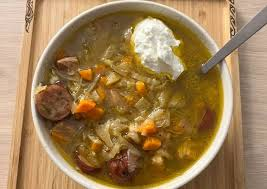
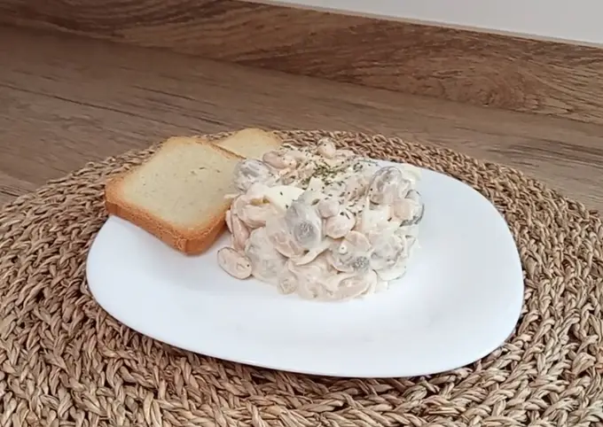

Ingredientes
20 - 40 minutos |
2 - 4 raciones
230 g Bacon ahumado sin corteza (Mercad0na)
Kiełbasa (opcional)
200 gr Chucrut (Mercad0na)
2 Zanahoria
1 Cebolla grande
2 Tallo apio
Al gusto Col (opcional)
1 litro Caldo de verduras
1 Yogur natural (o 2) o crema agria (Smetana)
Paso a paso:
1
Freír la carne hasta que quede dorada
2
Añadir 100 gr de chucrut
3
Añadir la zanahoria, apio, cebolla, col y rehogar un minuto
4
Añadir las especias: Pimentón, perejil, laurel y salpimentar
5
Añadir el caldo y agua si es necesario.
Lo importante en este paso es que la sopa sea densa, pero que el caldo cubra los ingredientes
6
Poner la olla a baja presión durante 20 minutos
7
Aprovechar el calor y añadir el resto del chucrut (100g).
8
Servir con una buena cucharada de yogur o smetana y mezclar
Recetas de Ucrania
Kapusniak

Yushka
Ingredients
Caldo de carne 2
Patatas 5
Zanahoria 1
Cebolla 2
Tocino 100gr
Harina 1 vaso
Huevo 1 piezas
Agua 0.5 vaso
Sal
PREPARACIÓN:
Haz la masa para las galushkas (mezcla la harina, el huevo, echa la sal adecuada y añade el agua).
Aplana la masa de 2 cm de espesor, y luego corta los cuadrados 1*1,5 cm.
Agrega las patatas en dados, la zanahoria al caldo de carne hirviendo. 5 minutos después añade las galushkas.
Cocina a fuego medio durante 20 minutos. Después sazona con sal, los condimentos y el tocino frito con la cebolla picada.
Caldo de carne 2
Patatas 5
Zanahoria 1
Cebolla 2
Tocino 100gr
Harina 1 vaso
Huevo 1 piezas
Agua 0.5 vaso
Sal
PREPARACIÓN:
Haz la masa para las galushkas (mezcla la harina, el huevo, echa la sal adecuada y añade el agua).
Aplana la masa de 2 cm de espesor, y luego corta los cuadrados 1*1,5 cm.
Agrega las patatas en dados, la zanahoria al caldo de carne hirviendo. 5 minutos después añade las galushkas.
Cocina a fuego medio durante 20 minutos. Después sazona con sal, los condimentos y el tocino frito con la cebolla picada.
Ensalada ucraniana de alubias

Ingredientes
15 minutos | 2 raciones
2 huevos cocidos
1 cebolleta
320 gr habichuelas cocidas
Zumo de medio limón
130 gr champiñones en conserva
1 yogur griego sin azúcar
Aceite y sal
al gusto Pimienta y orégano
Pasos de la receta
1. Ponemos en un bol las habichuelas previamente enjuagadas y añadimos los champiñones cortados por la mitad
2. Añadimos la cebolleta en juliana y los huevos cocidos cortados a groso modo
3. Añadimos el yogur el zumo de limón aceite sal pimienta y orégano al gusto, buen provecho
15 minutos | 2 raciones
2 huevos cocidos
1 cebolleta
320 gr habichuelas cocidas
Zumo de medio limón
130 gr champiñones en conserva
1 yogur griego sin azúcar
Aceite y sal
al gusto Pimienta y orégano
Pasos de la receta
1. Ponemos en un bol las habichuelas previamente enjuagadas y añadimos los champiñones cortados por la mitad
2. Añadimos la cebolleta en juliana y los huevos cocidos cortados a groso modo
3. Añadimos el yogur el zumo de limón aceite sal pimienta y orégano al gusto, buen provecho